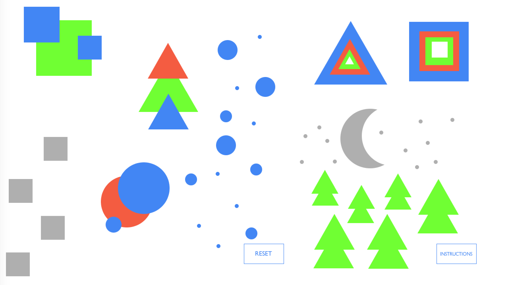

Over the summer I took a basic programming class where we used Processing. We were able to scratch the surface of using programming as a way to visually solve problems. This was my first time working with Java and I was able to create several programs. "Draw with Shapes" was my favorite as it's fun and child friendly.
The program allows the user to specify the shape (circle, square, or triangle), the size, and the color (gray, red, blue, green, or white) and then place it on the canvas. The user can add as many shapes as they want. In case the user forgets the controls, they can hover over the instruction button. Should they want to start fresh, they can click the "Reset" button. I focused on making this program as user friendly as possible!

An example of a drawing created with the program.
Currently I am working on recreating this program in Javascript. This page will be updated with a link to try it out so be on the look out! In the meantime, feel free to take a look at the program on my Github.